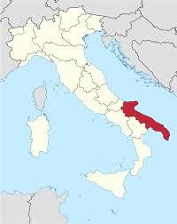
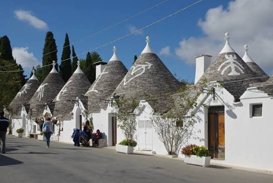
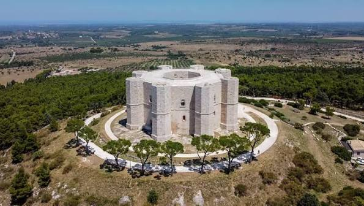
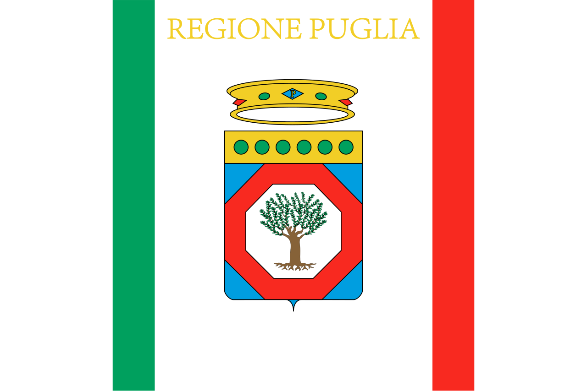
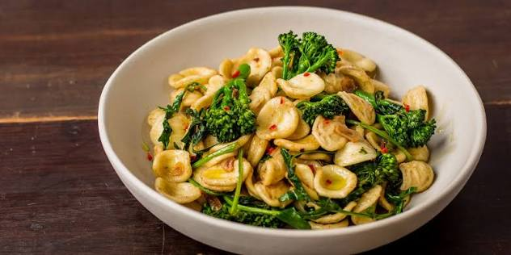
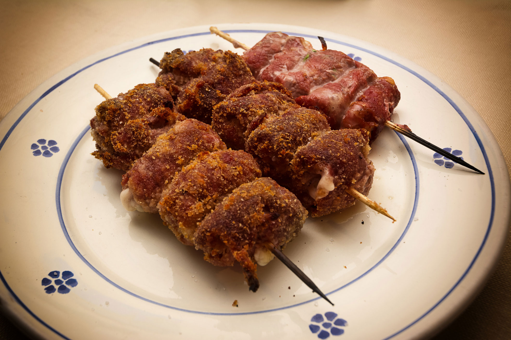
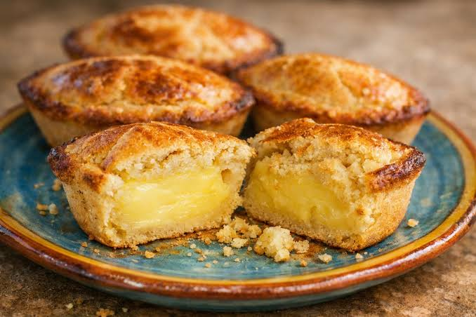
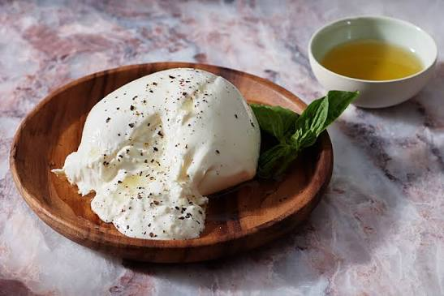
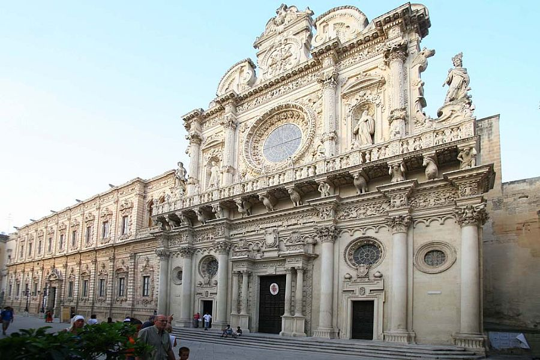

Southeastern Italy forming the "heel" of the peninsula
Bari
Flat plains, olive groves, and Adriatic coastline
Italian and Apulian dialects
Orecchiette, burrata, and Pasticciotto
Trulli houses, beaches, and Mediterranean culture

Puglia (also known as Apulia in English) is a region of Southern Italy located on the heel of the Italian peninsula is a region located in the southeastern part of Italy’s peninsula, forming the "heel" of the Italian boot. Surrounded by the Adriatic Sea to the east and the Ionian Sea to the south, the region has a strong connection to the Mediterranean. In addition, it is bordered by the other Italian regions of Molise to the north, Campania to the west, and Basilicata to the southwest. Its long coastline, fertile plains, and unique landscapes have shaped Puglia's history, culture, and traditions, making it famous for its seaside towns, ancient olive groves, and rich agricultural heritage.
Provinces: Foggia, Barletta-Andria-Trani, Bari, Taranto, Brindisi and Lecce
Capital (and largest city): Bari
Puglia has a typical Mediterranean climate, with hot, dry summers and mild winters. Coastal areas remain warm throughout the year, while inland hills and plateaus experience cooler temperatures and occasional snowfall. As one of Italy’s hottest and driest regions, summer temperatures can exceed 40°C (104°F), with limited rainfall mostly occurring during autumn and winter.
Puglia’s landscape varies between the mountainous north and the flatter southern areas. The Gargano and Daunia areas in the north are more rugged, with hills, forests, and higher elevations that create a cooler and more diverse environment. In contrast, central and southern Puglia, including the Salento peninsula, is mostly flat or gently rolling, with wide plains and a long coastline. These fertile lands are ideal for agriculture, especially the cultivation of olive groves, vineyards, and other Mediterranean crops.
Puglia’s history stretches back thousands of years. During the first millennium BCE, the region was inhabited by the Messapians, an ancient Italic people who built fortified settlements and developed a strong culture based on agriculture and maritime trade.
In the 8th century BCE, Greek settlers arrived and transformed parts of Puglia into important centers of Magna Graecia. The city of Taranto became one of the most prosperous Greek colonies, known for its contributions to art, architecture, philosophy, and commerce.
In 272 BCE, the Romans conquered Taranto and expanded their influence throughout the region. Due to its strategic location between Rome and the Eastern Mediterranean, Puglia became an important crossroads for trade, communication, and culture.
After the fall of the Roman Empire in 476 CE, Puglia experienced centuries of change, coming under the control of various powers, including the Germanic peoples and later the Byzantine Empire, which ruled the region for nearly two centuries.
In 1043, the Normans established their presence in southern Italy and created the Kingdom of Sicily. Under the rule of Emperor Frederick II between 1220 and 1250, Puglia experienced a period of prosperity, with advances in architecture, administration, and culture. Later, in the 13th century, the region became part of the Kingdom of Naples under Angevin rule.
For centuries, Puglia followed the changing fortunes of southern Italy. Spanish rule lasted until 1713, when the Kingdom of Naples and Sicily came under Austrian Habsburg influence. In 1759, control returned to the Spanish Bourbon dynasty under King Ferdinand IV.
The influence of the French Revolution reached southern Italy in 1799, when French forces invaded Naples and briefly established the Parthenopean Republic. After Napoleon’s defeat, the Kingdom of the Two Sicilies was formed in 1816 by uniting the Kingdom of Naples and Sicily.
Finally, in 1861, Puglia became part of the newly unified Kingdom of Italy during the Risorgimento, joining the country under the leadership of King Victor Emmanuel II.
As of 2026, the total population of Puglia is 3.8 million people.
In addiiton, the region has a land area of 19,543 km² and a population density of 197.8/km².
Bari is the capital of Puglia and an important port city on the Adriatic Sea. Known for its historic Bari Vecchia (Old Town), the city is famous for the Basilica of Saint Nicholas, a major pilgrimage site, as well as its seafood, traditional pasta-making culture, and lively waterfront. It serves as a cultural and economic hub connecting Italy with the eastern Mediterranean.
Population: 316,248 people
Taranto is a historic coastal city in Puglia located between the Mar Grande and Mar Piccolo, two bays that have shaped its identity as an important naval and trading center. Founded by the Greeks in the 8th century BCE, it became one of the most powerful cities of Magna Graecia. Today, Taranto is known for its archaeological heritage, ancient Greek influences, maritime traditions, and as one of Italy’s major industrial and naval cities.
Population: 185,112 people
Foggia is a city in northern Puglia located in the fertile Tavoliere delle Puglie, one of Italy’s largest plains. Known for its strong agricultural tradition, the city has historically been an important center for wheat production and farming. Foggia also features notable landmarks such as the Cathedral of Foggia and has a rich history connected to the medieval Kingdom of Naples.
Population: 145,078 people
Andria is a historic city in central Puglia famous for Castel del Monte, one of Italy’s most unique medieval castles and a UNESCO World Heritage Site. Built in the 13th century by Emperor Frederick II, the castle is known for its unusual octagonal design and mysterious symbolism. The city is also recognized for its olive oil production, traditional cuisine, and its role as an important cultural center in the region.
Population: 96,520 people

The Trulli of Alberobello are one of Puglia’s most recognizable landmarks. These traditional stone houses feature unique cone-shaped roofs built using ancient dry-stone construction techniques. Located in the Itria Valley, the trulli reflect Puglia’s rural heritage and have been recognized as a UNESCO World Heritage Site.

Located near Andria, Castel del Monte is a medieval castle built in the 13th century by Emperor Frederick II. Famous for its unusual octagonal shape, the castle combines elements of medieval architecture, mathematics, and symbolism. Today, it is one of Italy’s most important historical landmarks and a UNESCO World Heritage Site.

The flag consists of a white field with the words "Regione Puglia" ("Apulia Region") in gold letters at the top center, with the coat of arms of Apulia below; a green stripe towards the hoist-side, and a red stripe towards the fly-side.
The flag of Puglia was officially adopted on August 10, 2001, representing the identity and heritage of the region. However, in 2011, the design was modified following the creation of the Province of Barletta-Andria-Trani in 2009, which increased the number of provinces in Puglia from five to six. As a result, the symbols above the red octagon on the flag were updated from five to six coins, with each coin representing one of Puglia’s provinces and highlighting the unity of the entire region.
The flag of Puglia reflects the region’s history, landscapes, and cultural identity. At the top, the words "Regione Puglia" appear in gold lettering above the regional coat of arms, which is topped by the crown of Frederick II. The shield contains several important symbols: the six bezants (coins) represent the six provinces of Puglia, while the octagon refers to Castel del Monte, the famous medieval castle built by Frederick II. The olive tree symbolizes peace, unity, and brotherhood, while also representing Puglia’s extensive olive-growing tradition. Finally, the green and red stripes on a white background recall the colors of the Italian national flag.
Puglia has a rich linguistic heritage shaped by centuries of invasions, migrations, and cultural exchanges. The region’s dialects reflect its position as a meeting point between Western Europe and the Eastern Mediterranean, creating unique varieties of speech throughout the territory.
Spoken mainly in northern Puglia, including areas such as Foggia, the Gargano Peninsula, and nearby towns, these dialects reflect the region’s historical role as a “Gateway to the Balkans” through migration and cultural exchange. They are strongly influenced by the Neapolitan language, while also containing traces of Balkan and Slavic influences due to centuries of connections across the Adriatic Sea.
Spoken in the Salento Peninsula, the southernmost part of Puglia, Salentino is one of the region’s most distinctive dialects. Influenced by Greek, Latin, and Arabic, it reflects Salento’s history as a "Bridge Between East and West", where different civilizations interacted for centuries.
One of the most fascinating examples of this heritage is Griko, a Greek-influenced dialect spoken in a small number of Salento communities. Griko preserves elements of the ancient Magna Graecia period, connecting modern-day Puglia with the Greek colonies that once flourished along the region’s coast.
Puglia’s cuisine is deeply connected to its Mediterranean landscape, with simple, fresh ingredients shaped by the region’s agricultural traditions and coastal location. Known as the “breadbasket of Italy,” Puglia is famous for its olive oil, durum wheat, seafood, vegetables, and traditional handmade pasta. Many dishes focus on local ingredients and highlight the region’s rural roots and centuries-old culinary traditions.

One of Puglia’s most iconic dishes is orecchiette con cime di rapa (ear-shaped pasta with broccoli rabe). The pasta is traditionally handmade and gets its name from its small, rounded shape that resembles little ears. Combined with bitter greens, garlic, chili peppers, and olive oil, this dish represents Puglia’s simple yet flavorful approach to cooking.

Bombette Pugliesi are small rolls of thinly sliced pork filled with cheese, herbs, and sometimes cured meats before being grilled. Originally from the Valle d’Itria, these flavorful meat rolls are a popular street food and barbecue dish throughout Puglia. Their name comes from their small, round shape and the burst of flavor they provide when eaten.

Pasticciotto is a traditional Puglian pastry made with a golden shortcrust shell filled with creamy custard. Originating from the Salento area, this dessert is often enjoyed for breakfast with coffee or as a sweet treat. Its rich filling and delicate pastry make it one of the most beloved desserts in southern Italy.

Puglia is the birthplace of burrata, a soft cheese known for its creamy interior made from stracciatella and cream wrapped in a layer of mozzarella. Originating near Andria in the early 20th century, burrata has become one of Italy’s most internationally recognized cheeses. This specialty reflects Puglia’s strong dairy traditions and its use of simple, high-quality local ingredients. Its rich and delicate flavor makes it a versatile ingredient, often enjoyed on fresh bread, in salads with tomatoes and olive oil, alongside handmade pasta, or as a topping for traditional pizzas. Whether served simply or incorporated into more elaborate dishes, burrata represents the fresh flavors and culinary creativity of Puglia.

Puglia is famous for its unique Baroque architecture, especially in the city of Lecce, often called the "Florence of the South." During the 17th and 18th centuries, local architects created elaborate churches, palaces, and monuments using Lecce stone, a soft limestone that allowed for highly detailed carvings. The style is known for its ornate decorations, including sculptures of flowers, mythical creatures, and religious figures, making Lecce one of the most important centers of Baroque art in southern Italy.
A famous example of a building made with Lecce stone is the facade of the Basilica of Santa Croce in Lecce. Built between the 16th and 17th centuries, its intricate Baroque decorations showcase the qualities of Lecce stone, a soft limestone that allowed artists to carve extremely detailed designs such as flowers, animals, angels, and mythical figures.
Born Albano Carrisi in Cellino San Marco, Puglia, Al Bano is one of Italy’s most famous singers and a major figure in Italian pop music. He gained international recognition for his powerful voice and for his long musical partnership with Romina Power, forming the duo Al Bano & Romina Power. Their songs became popular across Europe and beyond, with their most famous hit, "Felicità" (1982), becoming an iconic Italian song. Throughout his career, Al Bano has represented Puglia’s cultural heritage through his music and continues to be celebrated as one of the region’s most successful artists.
Want to learn more about Puglia? Watch this video to explore its landscapes, history, culture, and traditions.
Watch the video →